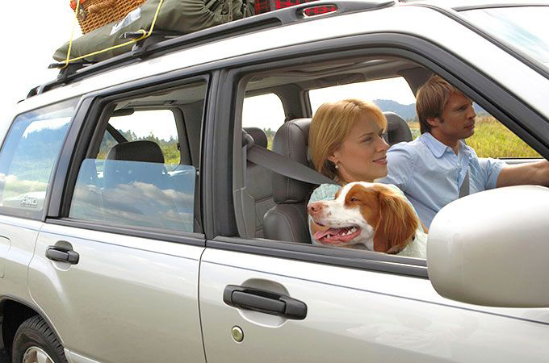

5 Tips to Lessen Your Dog's Anxiety on Your Road Trip Adventure
When making plans for an adventurous road trip for you and your furry best friend, you'll want to make sure the experience will be enjoyable for you both. To that end, it’s important you keep in mind your dog's comfort and overall feelings and temperament while on the road.
Many dogs experience anxiety in the car when they must ride and remain confined for long periods. But there are methods and tools you can utilize that will help you prevent or remedy any distress your dog may have. Here are some tips that will help you lessen your dog's anxiety and ensure the road trip is nothing but fun.
Try Some Trial Runs
Get your dog comfortable with car rides before you embark on your long journey. Begin by letting your dog explore the car while it's parked in the driveway and also allow them to sit in the front or back seat so they know what to expect on the open road. Next, take your dog on small trips around town by having them sit in the back seat either harnessed, in a crate, or let them roam about freely. Ultimately, this activity should be all about seeing which conditions they prefer before integrating this plan into your road trip.
Create a Smooth Ride
A bumpy or loud ride can be startling for your dog, so make sure everything is in-tune with your vehicle for smooth sailing. Equip your car with tires known for a quiet and comfortable ride, including all-performance Nitto tires that deliver dependability in various conditions. In addition, make sure your muffler is in good, working condition, as a broken one can make loud noises that could disturb your canine companion and other motorists. Have your mechanic tune up your vehicle before embarking on your trip, so you are assured it's safe and sound.
Allow for Plenty of Pit Stops
Inevitably, your dog will experience anxiety and restlessness if they're cooped up in the car for too long. Plan out pit stops along your route, where you can let your dog stretch their legs and have a bathroom break, and always make it a habit to pack and bring along disposable bags to clean up their droppings. Have some food and water at the ready, so your dog won’t get hungry and restless while in the car. Bring along some foldable and portable bowls that are easy to transport, set up and break down. But it's not just about your pooch, as you can utilize this break for a snack and to check your route to ensure you arrive on time and don't get lost.
Help Reduce their Stress, Fear
Dogs are highly sensitive to pheromones, which affect their mood and behavior, so make sure to fasten a pheromone collar to your dog that will help reduce their stress and fear. Sentry's Calming Collar releases pheromones for up to 30 days, which will help your dog feel more safe and secure. These pheromones mimic those produced and released by a mother dog to calm their puppies. Plus, the collar contains chamomile and lavender scents, which you will both enjoy.
Toys And Accessories
It's also a good idea to set up an area for your dog that will provide them with a haven of comfort. If they have a blanket they use at home, set it in the back seat so the scent will put them at ease. Pack up some of their favorite toys that they play with and enjoy, as well as any additional items that will keep your companion calm and occupied. Treat your dog to a bone they can gnaw on while you’re on the go. But make sure the bone is recommended by vets and won’t break into little pieces, as you won’t be able to keep a close eye on your dog to prevent them from eating any hazardous pieces.